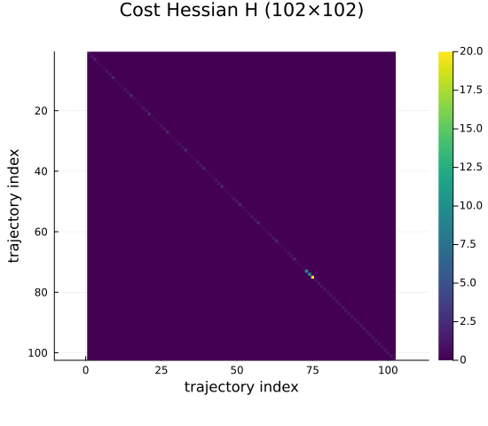
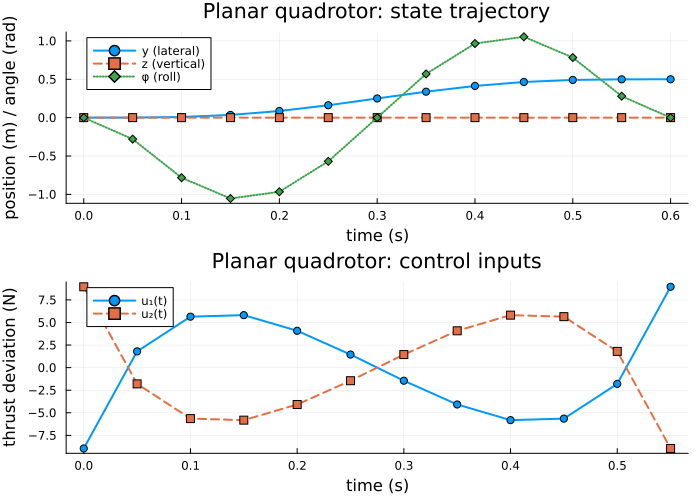
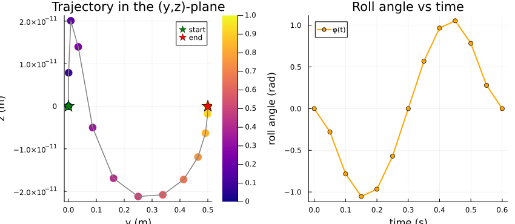
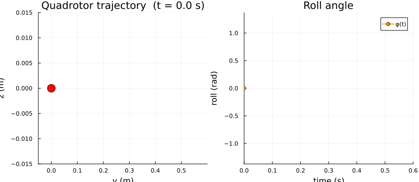

Controlled Trajectory Examples: 3 — Planar Quadrotor
This is the third example in the four-part controlled-trajectory progression. The second example introduced a multi-agent stacked system. Here we stay with a single agent but add the physical coupling that arises in a real robotic platform: the planar quadrotor.
Physical system
A planar (2-D) quadrotor has position $(y, z)$ in the vertical plane, roll angle $\phi$, and the corresponding velocities. The two motor thrusts $u_1$ and $u_2$ provide total thrust and differential torque.
\[x = \begin{bmatrix} y \\ z \\ \phi \\ \dot{y} \\ \dot{z} \\ \dot{\phi} \end{bmatrix}, \qquad u = \begin{bmatrix} u_1 \\ u_2 \end{bmatrix}.\]
Linearizing around the hover equilibrium $(y, z, \phi, \dot{y}, \dot{z}, \dot{\phi}) = 0$, $u_1 = u_2 = mg/2$ and using small-angle approximations, gives the linear time-invariant model
\[A_c = \begin{bmatrix} 0 & 0 & 0 & 1 & 0 & 0 \\ 0 & 0 & 0 & 0 & 1 & 0 \\ 0 & 0 & 0 & 0 & 0 & 1 \\ 0 & 0 & -g & 0 & 0 & 0 \\ 0 & 0 & 0 & 0 & 0 & 0 \\ 0 & 0 & 0 & 0 & 0 & 0 \end{bmatrix}, \qquad B_c = \begin{bmatrix} 0 & 0 \\ 0 & 0 \\ 0 & 0 \\ 0 & 0 \\ 1/m & 1/m \\ \ell/(2I) & -\ell/(2I) \end{bmatrix},\]
where $g = 9.81\,\text{m/s}^2$, $m$ is the total mass, $I$ the moment of inertia about the roll axis, and $\ell$ the half-arm length. The coupling term $-g\,\phi$ in the $\ddot{y}$ row captures the lateral acceleration due to roll.
References:
- Mahony, Müller & Ganguli (2012), "A non-linear observer for attitude estimation of a fixed-wing unmanned aerial vehicle without GPS measurements", Control Engineering Practice.
- Mueller & D'Andrea (2013), "Stability and control of a quadrocopter despite the complete loss of one, two, or three propellers", ICRA 2014.
using CellularSheaves
using LinearAlgebra
using BlockArrays
using Plots
using SparseArraysStep 1: Physical parameters and hover linearization
g = 9.81 # gravitational acceleration (m/s²)
m = 0.5 # vehicle mass (kg)
I_quad = 0.01 # moment of inertia about roll axis (kg·m²)
ℓ = 0.25 # half arm length (m)0.25The coupling $-g$ in the (4,3) entry of $A_c$ is the hallmark of the hover linearization: lateral acceleration is proportional to roll angle.
Ac = [0.0 0.0 0.0 1.0 0.0 0.0;
0.0 0.0 0.0 0.0 1.0 0.0;
0.0 0.0 0.0 0.0 0.0 1.0;
0.0 0.0 -g 0.0 0.0 0.0;
0.0 0.0 0.0 0.0 0.0 0.0;
0.0 0.0 0.0 0.0 0.0 0.0]
Bc = [0.0 0.0;
0.0 0.0;
0.0 0.0;
0.0 0.0;
1.0/m 1.0/m;
ℓ/(2.0*I_quad) -ℓ/(2.0*I_quad)]
println("State dim n = ", size(Ac, 1))
println("Control dim m = ", size(Bc, 2))State dim n = 6
Control dim m = 2Step 2: Build the ControlledTrajectorySheaf
h = 0.05 # sample period (seconds) — short step for fast quadrotor dynamics
k = 12 # number of time steps (0.6 s total horizon)
F = EuclideanSheaf{Float64}(fill(6, 1)) # one vertex, 6D stalk
ts = ControlledTrajectorySheaf(F, Ac, Bc, h, k)ControlledTrajectorySheaf{Float64}(12, 0.05, [0.0 0.0 … 0.0 0.0; 0.0 0.0 … 1.0 0.0; … ; 0.0 0.0 … 0.0 0.0; 0.0 0.0 … 0.0 0.0], [0.0 0.0; 0.0 0.0; … ; 2.0 2.0; 12.5 -12.5], [1.0 0.0 … 0.0 -0.00020437499999999997; 0.0 1.0 … 0.049999999999999996 0.0; … ; 0.0 0.0 … 1.0 0.0; 0.0 0.0 … 0.0 1.0], [-3.193359374999999e-5 3.193359374999999e-5; 0.0024999999999999996 0.0024999999999999996; … ; 0.09999999999999999 0.09999999999999999; 0.625 -0.625], A network sheaf with 14 vertex stalks and 13 edge stalks.
, 6, 2)Step 3: Fix endpoint states
We execute a short lateral manoeuvre: move 0.5 m in the $y$-direction while returning to hover at the end. The $z$-position and roll angle start and end at zero.
x1 = zeros(6) # start at hover
xk1 = [0.5, 0.0, 0.0, 0.0, 0.0, 0.0] # 0.5 m lateral displacement, back to hover6-element Vector{Float64}:
0.5
0.0
0.0
0.0
0.0
0.0Step 4: Assemble the LQR objective
Penalize lateral position and roll angle more heavily in the terminal cost to discourage residual roll at landing.
n = ts.state_dim
m_ctrl = ts.control_dim
Q = Diagonal([1.0, 1.0, 2.0, 0.5, 0.5, 0.5]) # state running cost
Ru = Matrix{Float64}(I, m_ctrl, m_ctrl) # control cost
Qf = Diagonal([10.0, 10.0, 20.0, 1.0, 1.0, 1.0]) # heavier terminal penalty
H, f, _ = lqr_objective(ts, Matrix(Q), Ru; Qf=Matrix(Qf))(sparse([1, 2, 3, 4, 5, 6, 7, 8, 9, 10 … 93, 94, 95, 96, 97, 98, 99, 100, 101, 102], [1, 2, 3, 4, 5, 6, 7, 8, 9, 10 … 93, 94, 95, 96, 97, 98, 99, 100, 101, 102], [1.0, 1.0, 2.0, 0.5, 0.5, 0.5, 1.0, 1.0, 2.0, 0.5 … 1.0, 1.0, 1.0, 1.0, 1.0, 1.0, 1.0, 1.0, 1.0, 1.0], 102, 102), [-0.0, -0.0, -0.0, -0.0, -0.0, -0.0, -0.0, -0.0, -0.0, -0.0 … -0.0, -0.0, -0.0, -0.0, -0.0, -0.0, -0.0, -0.0, -0.0, -0.0], 0.0)Visualize the block-diagonal cost Hessian H. State weights Q (×k running blocks, Qf on terminal) and control weight Ru (×k blocks) are placed on the block diagonal. The non-uniform Q/Qf weighting (heavier roll penalty) is visible in alternating stripe intensities on the state-block diagonal.
p_H = heatmap(Matrix(H);
color=:viridis, colorbar=true,
title="Cost Hessian H ($(size(H,1))×$(size(H,2)))",
xlabel="trajectory index", ylabel="trajectory index",
yflip=true, aspect_ratio=:equal, size=(550, 480))
p_H
Step 5: Solve for the optimal trajectory
z_opt, α_opt, z_p, null_basis = optimal_control_trajectory(ts, x1, xk1, H, f)
println("Free parameters r = ", size(null_basis, 2))
println("All entries finite: ", all(isfinite, Array(z_opt)))Free parameters r = 18
All entries finite: trueStep 6: State and control time-series
times_state = h .* (0:k)
times_control = h .* (0:k-1)
y_traj = [Array(z_opt[Block(t)])[1] for t in 1:k+1]
z_traj = [Array(z_opt[Block(t)])[2] for t in 1:k+1]
phi_traj = [Array(z_opt[Block(t)])[3] for t in 1:k+1]
u1_traj = [Array(z_opt[Block(k+1+t)])[1] for t in 1:k]
u2_traj = [Array(z_opt[Block(k+1+t)])[2] for t in 1:k]
p_state = plot(times_state, y_traj;
lw=2, marker=:circle, label="y (lateral)",
xlabel="time (s)", ylabel="position (m) / angle (rad)",
title="Planar quadrotor: state trajectory")
plot!(p_state, times_state, z_traj;
lw=2, marker=:square, linestyle=:dash, label="z (vertical)")
plot!(p_state, times_state, phi_traj;
lw=2, marker=:diamond, linestyle=:dot, label="φ (roll)")
p_ctrl = plot(times_control, u1_traj;
lw=2, marker=:circle, label="u₁(t)",
xlabel="time (s)", ylabel="thrust deviation (N)",
title="Planar quadrotor: control inputs")
plot!(p_ctrl, times_control, u2_traj;
lw=2, marker=:square, linestyle=:dash, label="u₂(t)")
quadrotor_ts_plot = plot(p_state, p_ctrl; layout=(2, 1), size=(700, 500))
quadrotor_ts_plot
Step 7: Trajectory in the physical plane and pitch angle
The vehicle follows a curved arc in the $(y, z)$-plane as it accelerates laterally. Roll couples lateral and vertical motion: to move in the $y$-direction, the vehicle first tilts (positive $\phi$), which redirects thrust horizontally.
Two panels are shown:
- Left — the spatial trajectory $(y(t), z(t))$ in the vertical plane, with time encoded as marker size (small at start, large at end).
- Right — the roll angle $\phi(t)$ as a function of time, showing the pitch-up / pitch-down manoeuvre.
t_idx = 1:k+1
t_norm = range(0.0, 1.0; length=k+1)
p_plane = scatter(y_traj, z_traj;
marker_z=t_norm, color=:plasma, colorbar=true,
label="", xlabel="y (m)", ylabel="z (m)",
title="Trajectory in the (y,z)-plane",
markerstrokewidth=0, markersize=7)
plot!(p_plane, y_traj, z_traj; lw=1.5, color=:gray, label="")
scatter!(p_plane, [y_traj[1]], [z_traj[1]]; color=:green, markersize=10,
label="start", markershape=:star5)
scatter!(p_plane, [y_traj[end]], [z_traj[end]]; color=:red, markersize=10,
label="end", markershape=:star5)
p_phi = plot(times_state, phi_traj;
lw=2, color=:orange, marker=:circle, label="φ(t)",
xlabel="time (s)", ylabel="roll angle (rad)",
title="Roll angle vs time")
quadrotor_traj_plot = plot(p_plane, p_phi; layout=(1, 2), size=(850, 370))
quadrotor_traj_plot
Step 8: Animated trajectory (physical plane on a loop)
Each frame adds one more time step to the path in the $(y, z)$-plane.
phi_min = minimum(phi_traj)
phi_max = maximum(phi_traj)
phi_pad = max(abs(phi_min), abs(phi_max)) * 0.3
anim = @animate for i in 1:k+1
p1 = plot(y_traj[1:i], z_traj[1:i];
lw=2, color=:royalblue, label="",
xlabel="y (m)", ylabel="z (m)",
title="Quadrotor trajectory (t = $(round(times_state[i]; digits=2)) s)",
xlims=(-0.05, 0.6), ylims=(-0.015, 0.015))
scatter!(p1, [y_traj[i]], [z_traj[i]];
color=:red, markersize=9, markershape=:circle, label="")
p2 = plot(times_state[1:i], phi_traj[1:i];
lw=2, color=:orange, marker=:circle, label="φ(t)",
xlabel="time (s)", ylabel="roll (rad)",
title="Roll angle",
xlims=(0, k * h), ylims=(phi_min - phi_pad, phi_max + phi_pad))
plot(p1, p2; layout=(1, 2), size=(850, 370))
end
quadrotor_anim = gif(anim; fps=6)
quadrotor_anim
Verification (converted to warnings)
Endpoint checks – issue warnings instead of failing the build.
if !(Array(z_opt[Block(1)]) ≈ x1)
@warn "Initial state not satisfied"
end
if !(isapprox(Array(z_opt[Block(k + 1)]), xk1; atol=1e-8))
@warn "Terminal state not satisfied"
end
if !all(isfinite, Array(z_opt))
@warn "Trajectory contains non-finite values"
endDynamics consistency – report any violations as warnings.
for t in 1:k
xt = Array(z_opt[Block(t)])
xt1 = Array(z_opt[Block(t + 1)])
ut = Array(z_opt[Block(k + 1 + t)])
resid = norm(ts.Ad * xt + ts.Bd * ut - xt1)
if resid ≥ 1e-9
@warn "Dynamics violated at step $t (residual = $resid)"
end
end
println("All endpoint and dynamics checks completed (warnings, if any, were shown above).")All endpoint and dynamics checks completed (warnings, if any, were shown above).What this example adds
Compared with the vehicle platoon, the planar quadrotor introduces:
- A physically coupled state space: the lateral acceleration is driven by the roll angle through the $-g\,\phi$ term in $A_c$.
- Two control inputs ($u_1$, $u_2$) whose sum and difference independently govern vertical thrust and roll torque.
- A 6-dimensional state, requiring a more structured choice of $Q$ and $Q_f$ to balance position and angular degrees of freedom.
The next and final example, Mass-Spring-Damper Chain, returns to a graph-coupled mechanical system that bridges toward sheaf-theoretic network analysis.